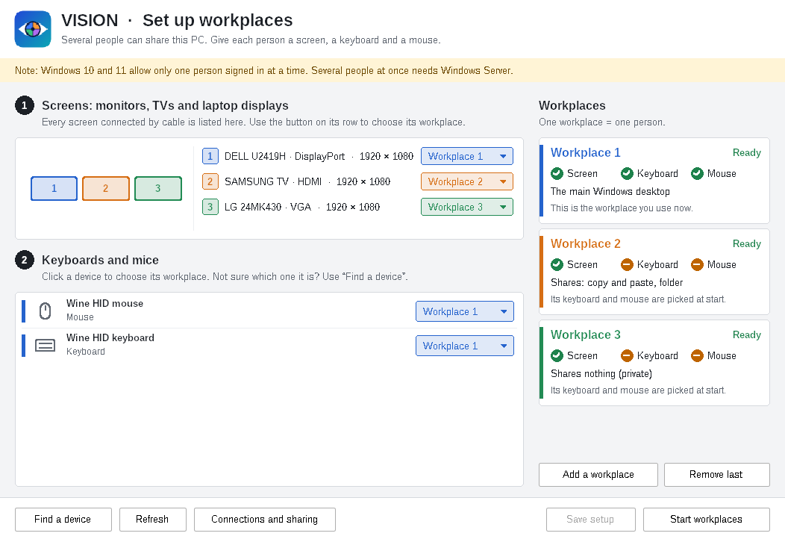

One PC. Many workplaces.
VISION lets several people use one Windows PC at the same time. Each person gets their own screen, keyboard and mouse, and their own separate desktop.
Download VISION for Windows
What VISION does
Connect extra monitors, keyboards and mice to one computer, and give each set to a different person.
Every screen is its own workplace
Monitors, TVs and laptop displays connected by HDMI, VGA, DVI or DisplayPort appear with their name. Plug one in and it gets a workplace of its own. Two screens never share one.
Own keyboard and mouse
A keyboard or mouse given to one workplace controls only that workplace. It never types or clicks in another one.
Up to 10 workplaces
Every workplace runs its own Windows desktop. People can do different work at the same time on the same PC.
Private by default
Programs, files and screen content of one workplace are not shown in another unless you allow it.
One place for sharing
A single panel decides what each workplace may do: copy and paste, a shared folder, sound, or switched off.
Nothing to configure by hand
No accounts to create and no settings files. Not sure which keyboard is which? Press a key on it and VISION shows you.
How to use it
Four steps from installing to working side by side.
- Install VISIONRun VISION-Setup.exe. It adds VISION to the Start menu and the desktop.
- Connect the screens, keyboards and miceEach one appears in VISION. A screen that is switched off gets a "Turn on" button.
- Press "Automatic setup"Each screen asks its person to press a key and click their mouse. VISION assigns them, saves and starts. Or do it by hand:
- Check the workplacesEach screen already has its own workplace. Use the button on a screen or device to change it; picking a workplace that has a screen swaps the two.
- Press "Start workplaces"Each extra screen shows its own Windows desktop. Press Stop to end them; open programs come back next time.
What you need
Please read this before you install.
Windows Server: every workplace gets its own Windows sign-in on this PC and works like a separate PC, all at the same time. Windows 10 and 11: they allow only one sign-in, so workplaces share it; VISION keeps each one's windows and mouse on its own screen, and people take turns typing.
| Windows | Windows Server 2016 or newer, 64-bit, to run several workplaces. Windows Server allows two extra people; more need Remote Desktop Services licences from Microsoft. |
|---|---|
| Screens | One per workplace. The PC needs a video output for each, for example extra graphics cards or USB display adapters. |
| Keyboards and mice | One of each per workplace, up to 10. |
| Input driver | The free Interception driver (non-commercial use). VISION offers to install it the first time; the PC restarts once. |
| Status | Early version. It has been tested in a Windows emulator but not yet on a real Windows Server PC, so try it on a spare PC first. |
Download VISION
Version 1.1.0 for Windows 64-bit. Free and open source.
Download VISION-Setup.exeBrowser blocks the download? Get the zip file instead. No installer wanted? Get VISION.exe on its own.
Questions
Windows says "Windows protected your PC". What do I do?
VISION is not signed with a paid certificate yet, so Windows warns the first time. Click "More info", then "Run anyway".
My second screen does not appear.
Check the cable first. If the screen is connected but switched off, or shows the same picture as another screen, VISION lists it with a "Turn on" button. You can also press the Windows key + P and choose "Extend".
Can people in different workplaces see each other's work?
No. Each workplace is separate. Sharing only happens if you tick it in "Connections and sharing": copy and paste, a shared folder, or sound.
What happens if VISION stops or crashes?
All keyboards and mice go back to the main desktop, so the PC always stays usable.
How do I remove VISION?
Open Windows Settings, Apps, find VISION and choose Uninstall. It asks whether to also remove the hidden accounts it made for the workplaces.